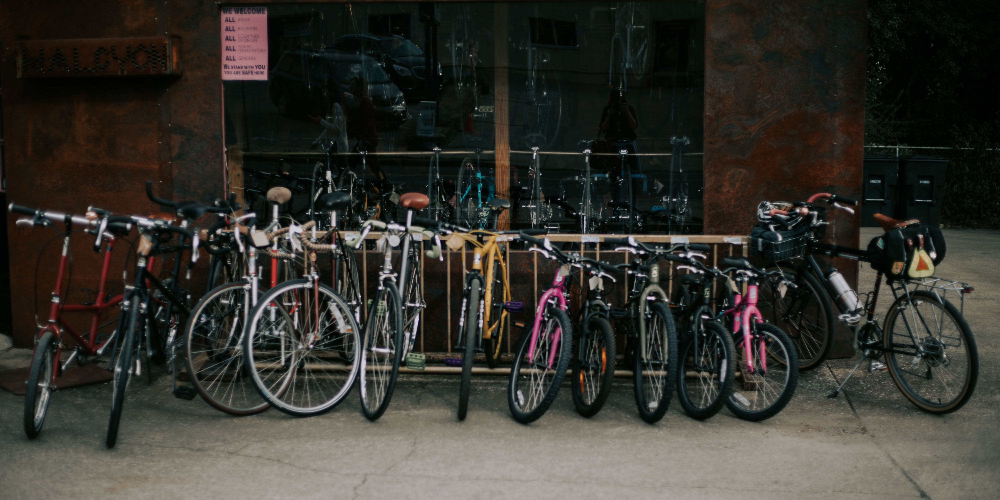

Cycling is often faster than driving, spirally in cities and towns during rush hour. Bicycles can curve weave between traffic, and sit at the front of the line for the green light to go.
Smartphone data from riders and drivers schlepping meals for restaurant-to-home courier service Deliveroo shows that bicycles are faster than cars. In towns and cities, bicyclists are also often faster than motorized two-wheelers. Deliveroo works with 30,000 riders and drivers in 13 countries. That bicyclists are faster in cities will come as no surprise to bicycle advocates who have staged so-called “commuter races” for many years. However, these races – organized to highlight the swiftness of urban cycling – are usually staged in locations and at hours skewed towards bicycle riders. The Deliveroo stats are significant because they have been extracted from millions of actual journeys.
Finding a park, especially in town when it’s busy can lead to driving around and around for what seems like forever, and then you have to walk all the way to and from wherever you managed to find a park. But there are parks for cycling everywhere. If you cycle into town you can guarantee that you’ll easily be able to find a park close to where you’re going.
Browser
Mobile